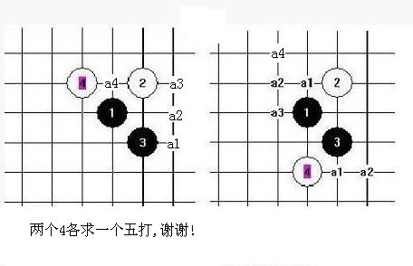

求蒲月最后两个四的五打点
首页
茗弈阁
#1 求蒲月最后两个四的五打点 作者：安娜制作所 发表时间：2010-11-19 8:14:12
其它的四只有一个五正在做,也以剩不多了!
谢谢大家了!
［ 失落刀 于 2010-12-2 20:08:39 时花20金币送鲜花一朵］
#2 Re:求蒲月最后两个四的五打点 作者：屏蔽 发表时间：2010-11-19 9:27:30
你的求助最好带点倾向性，单单发个图很难收到有价值的回复，有些形式上或实际证明过有一定优势的点，应当做更加深入的研究，不要让别人觉得似乎你从没接触过那些选点。找选点不是挑水果，这个不好就换另外一个，挑选的过程要有逻辑思路，否则效率会非常低。第二图a2左边的，我谈到过，没希望？第一图你也只能做1左边的。还有我说过未知局面应该从最困难的点开始做。就算你完成了这么有价值的棋谱，最后的感觉，对自己或对别人，都好像虎头蛇尾似的，如果确实找不到第五个胜点的话。 ［ 茗弈宽容 于 2010-11-19 13:14:55 时花20金币送鲜花一朵］
［ gerbo 于 2010-11-19 20:06:33 时花20金币送鲜花一朵］
#3 Re:求蒲月最后两个四的五打点 作者：踵酃 发表时间：2010-11-19 10:44:04
=======上图对应的爱五子棋谱代码如下，以便你拆解：========
h8i9i7g9g8
======================================================通过山口战，个人认为这个5黑稍微强，不过应该还没有强到可以必胜。
=======上图对应的爱五子棋谱代码如下，以便你拆解：========
h8a1i8b1j7
======================================================你肯定发现了，棋形来说是比较舒服地，
=======上图对应的爱五子棋谱代码如下，以便你拆解：========
h8i9i7g9j7
======================================================注意1，3，5。。。3个图像，一个形状。以这逻辑的话。。。到是可以参考以下。。。。。 ［ 茗弈宽容 于 2010-11-19 13:14:43 时花20金币送鲜花一朵］
#4 Re:求蒲月最后两个四的五打点 作者：安娜制作所 发表时间：2010-11-19 12:14:47
谢谢屏蔽老师指教,最后两点,人真的有点懒了, 耐心也不够!我继续做完它,争取一个月内发出来,目前大小在380M,做完这两点应该在420M左右!请大家关注本论坛更新!
#5 Re:求蒲月最后两个四的五打点 作者：小帮帮 发表时间：2010-11-19 13:50:26
做这么大的棋谱，意义不大！拆开一个个4做棋谱，好一些，再看情况合并。另外没有必要地毯面和深度太广，不中用
#6 Re:求蒲月最后两个四的五打点 作者：左伟光 发表时间：2010-11-28 23:01:58
很多人做谱都是用终结者合并，这样以来，很多不必要的点都包含在里面，所以文件比较大。而且这样做出来的谱，自己受益并不一定很大。建议自己打一遍谱出来，同时省去那些不必要的点。